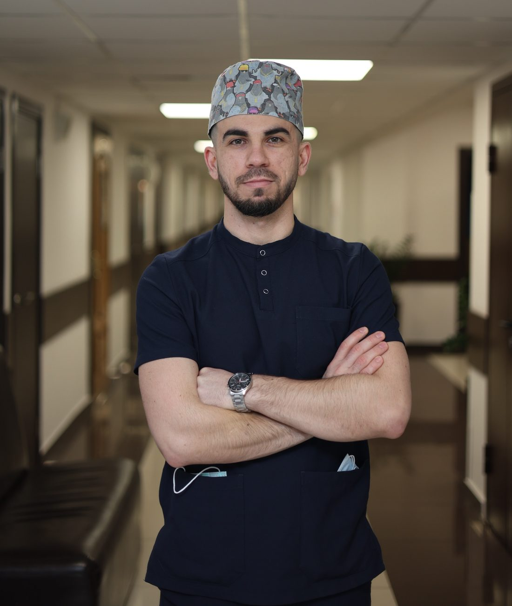
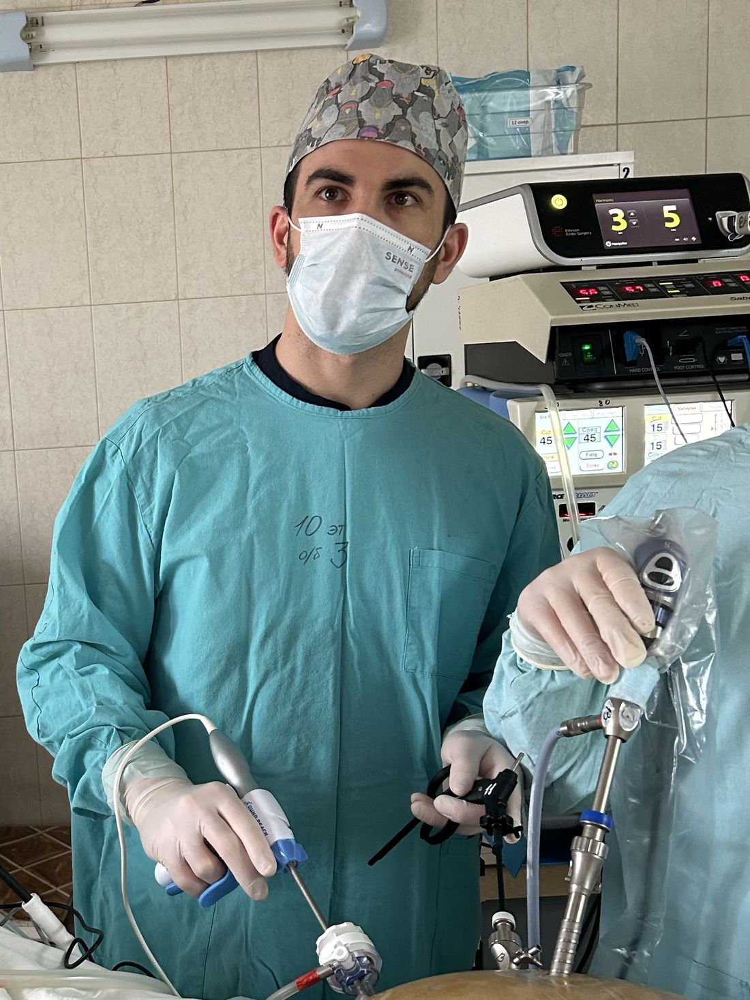
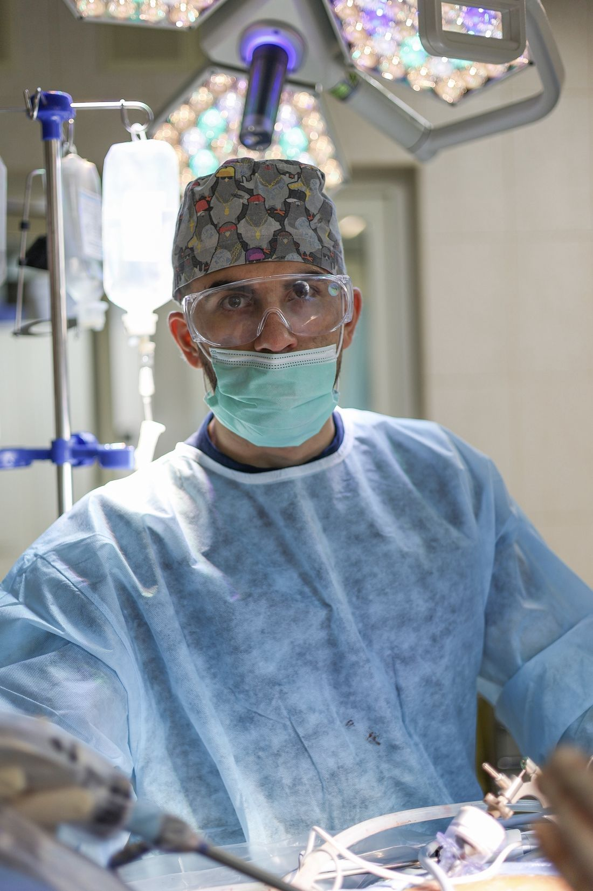
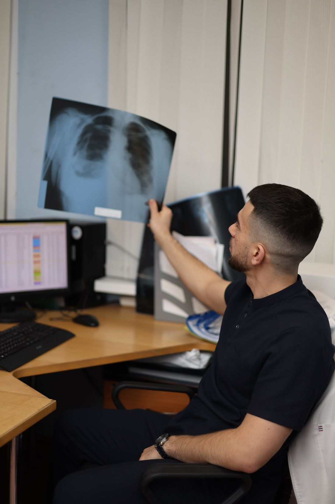
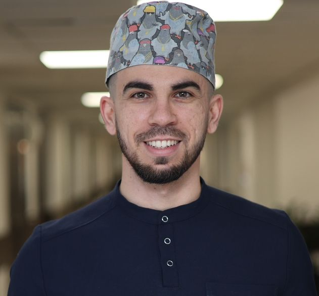

Путилов Сергей Георгиевич
Деликатные проблемы — без стыда. Объясню, что с вами происходит, и честно скажу, нужна ли операция.

Что вас беспокоит?
Выберите — подскажу, когда ждать нельзя и чем могу помочь.
Мой подход
Не делаю лишних операций, антибиотиков и обследований.
Объясняю причины и последствия — чтобы вы понимали свою болезнь.
Веду пациента до операции и после неё, а не только в операционной.
Лазер — инструмент с конкретными показаниями, а не чудо-метод.



Опыт и образование

Врач-хирург, Наро-Фоминская больница (Селятино)
Экстренная и плановая хирургияКолопроктолог, Диагностический клинический центр №1 (Москва)
Хирург, Подольская областная клиническая больница
Экстренная и плановая абдоминальная хирургияПовышение квалификации по онкологии
Соавтор статьи в European Journal of Surgical Oncology
Сохранение верхней прямокишечной артерии при раке средней трети сигмовидной кишкиОрдинатура по колопроктологии, Сеченовский университет, УКБ №1
Профессиональная переподготовка по хирургии
Ростовский государственный медицинский университет, лечебное дело
Отзывы пациентов
★★★★★Целый месяц я ходила по врачам и мучилась с двумя анальными трещинами, лечили, но лечение не приносило хороших результатов, меня отправляли на операцию. По совету своей подруги я обратилась к Сергею Георгиевичу, который очень внимательно меня выслушал, изучил все мои медицинские обследования, осмотрел и назначил мне грамотное лечение. За две недели одна трещина полностью зажила и вторая стала заживать…
★★★★★Обратилась к доктору в экстренном порядке по поводу кишечного кровотечения. Доктор оперативно разобрался в ситуации, установил причину и назначил лечение. … Хочу отметить особую деликатность доктора.
★★★★★Я обратился к Сергею Георгиевичу с деликатный проблемой. Доктор внимательно меня выслушал, потом осмотрел. Предложил варианты решения проблемы. Решили сразу убрать проблему, всё сделал аккуратно и быстро. Назначил процедуры и лечение. Профессионал своего дела. Рекомендую.
Где принимаю
ЛДЦ «Медицина»
Клиника работает пн–пт 7:00–20:00, сб 8:00–20:00, вс 9:00–18:00. Мой график уточняйте при записи. Возможен вызов врача на дом.
Записаться онлайн Моя страница на сайте клиники →Стоимость
| Первичная консультация колопроктолога | 2 500 ₽ |
| Первичная консультация хирурга | 2 400 ₽ |
| Повторная консультация | 2 200 ₽ |
| Консультация по результатам анализов в день приёма | 1 200 ₽ |
| Онлайн-разбор заключений | скоро |
По прайсу клиники на 18.11.2026. Точную стоимость уточняйте при записи.
Частые вопросы
Стыдно идти к проктологу
Врач видит это каждый день. На приёме я сначала выслушаю, потом объясню, что буду делать, и только потом осмотрю.
Нужна ли подготовка к приёму?
Когда запишетесь, напишите мне в Direct — подскажу, что сделать перед визитом и какие обследования взять с собой.
Можно ли без операции?
Часто да. Операцию предлагаю, только когда она действительно нужна, и объясняю почему.
Можно ли задать вопрос онлайн?
Напишите в Direct. Онлайн-разбор заключений скоро запустим: до очного приёма разберу жалобы и обследования и скажу, нужен ли осмотр. Диагноз и лечение — после очного приёма.